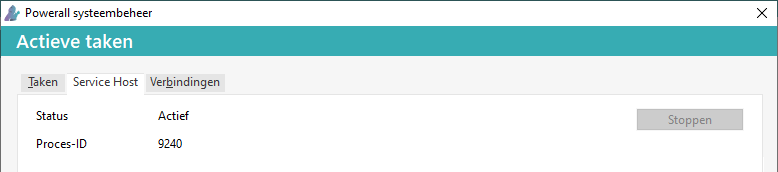

Alle gebruikers mogen deze status bekijken, maar alleen gebruikers met autorisatie Z (systeem beheer) kunnen de Service Host stoppen / starten.
-
De autorisatie wordt bepaald voor de gebruiker bij Onderhoud gebruikers.
-
Als de gebruiker niet geautoriseerd is, is de knop Stoppen, niet bruikbaar / grijs.

- Als dit programma via Powerall Lokaal opgestart wordt, kan er een foutmelding verschijnen, omdat dit programma onvoldoende rechten heeft.
- Start Powerall Lokaal via Rechtermuis > Als administrator uitvoeren op.